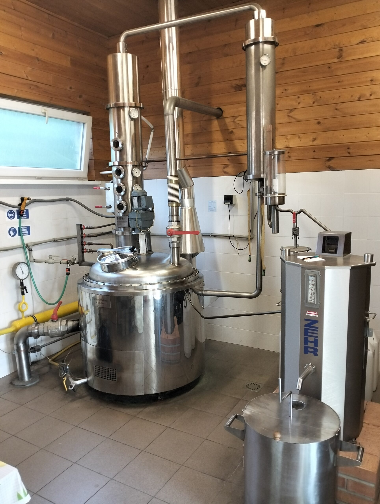

Pálenica Brestov
Obec Brestov sa nachádza 3 km severne od Humenného. Vraj v každej poriadnej slovenskej dedine nesmie chýbať kostol a krčma — u nás nesmie chýbať ani pálenica. Prevádzkuje ju Frndžalica s.r.o.
6. ročník ochutnávky ovocných destilátov sa uskutoční 7. 6. 2024 o 17:00 v reštaurácii Lizard v Humennom. Vzorky (0,35 l, s menom pestovateľa, druhom ovocia, liehovitosťou a dátumom výroby) posielajte na adresu Pálenica Brestov, Brestov 700, 066 01 Humenné. Miest je obmedzený počet — rezervujte si lístky vopred.

Služby
Príprava kvasu a pálenie
Kompletná obsluha od prípravy kvasu po destiláciu na modernom zariadení s deflegmátorom — vysoká kvalita destilátu aj z menej kvalitného kvasu.
Zabezpečenie ovocia
Pre zákazníkov vieme zabezpečiť ovocie od pestovateľov zo Slovenska, Česka, Maďarska a Poľska za bezkonkurenčné ceny — slivky, hrušky, jablká.
Fotogaléria
Zákonná úprava pestovateľského pálenia ovocia
Pre jedného pestovateľa a jeho domácnosť je možné za jedno výrobné obdobie (1. júla — 30. júna) v liehovare na pestovateľské pálenie vypáliť destilát z ovocných kvasov v množstve 43 la (43 litrov 100% alkoholu) pri zníženej sadzbe spotrebnej dane (7,452 €/la). Pri prekročení tohto množstva sa za prekročenú časť platí základná sadzba (14,904 €/la).
V liehovare možno vyrábať destilát len z dopestovaného ovocia v miernom podnebnom pásme, z jeho kvasov, alebo z čerstvého či skvaseného hrozna vrátane ovocných a hroznových vín bez cudzích cukornatých či iných prímesí.
Prevádzkovateľ prijíma kvas na spracovanie len na základe písomnej žiadosti pestovateľa. Ak si pestovateľ v danom období dal vyrobiť destilát aj inde, priloží k žiadosti písomné vyhlásenie s množstvom vyrobeného destilátu a sídlom daného liehovaru. Pri výpočte dane sa zohľadňuje množstvo liehu, ktoré pestovateľ v žiadosti uviedol ako už vyrobené v danom období.